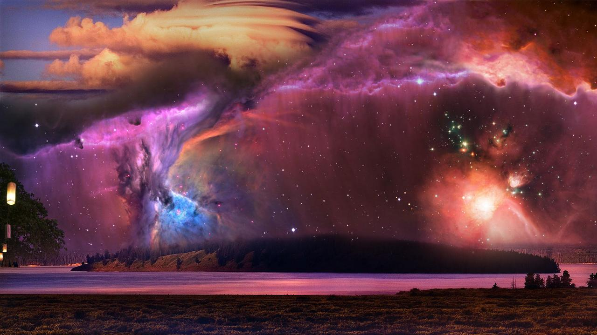

I implemented the unsharp filter as follows:
Apply gaussian blur to the original image with some given sigma; subtract the blurred image from the original to get the high-pass filtered image; then add it back to the original image, multiplied by some alpha. I picked parameter values sigma = 5 and alpha = 0.4 to generate this image, from project 1, that has been sharpened. Notice how many of the edges are stronger.

Another intresting effect I observed is when you add the blurred image to the original, with some alpha, we are basically emphasizing the low frequencies; this tends to create an instagram-filter like effect:
Part 1 : Hybrid Images
The hybrid images were generated by passing the first image through a low pass filter, and the second through a high pass filter, then combining the two with a factor of 0.8; that is, result = 0.8*low + 0.8*high.
Additionally, it seems optimal to use color in the high-pass filtered image; this is because, empirically, my color perception tends to decrease with distance along with my perception of high frequencies.
However, the results tend not to be particularily amazing; at far distances, the high frequency parts can still be seen and the low frequencies are fairly noticable at close distances, although the examples in the paper have the same problem. This is mostly an issue of parameter tuning; finding the right frequency cutoffs seems to be a image-specific kind of problem. Here is my favorite result:
and here is the laplacian/gaussian stack for it:
Note how, as we expect, at the end of the gaussian stack is just the blurred lake, and at the start of the laplacian stack is just the edges of the city. Here is the fourier transform:
The low pass filter worked well (as expected) but also removed some low frequencies; thus when we subtracted the blurred image from the original we still have a some low frequency aspects in the image, for the high pass filter. For the most part though, behavior is as expected, and the end result is a mix of the filtered images.
Here are some other images that didn't turn out as well:
From far away, it's supposed to be a dog with some rocks in the background; from close up it's my friend looking at the ocean. But the two don't blend together very naturally. Hybrid images really only seem to work with things that are already quite alike in shape.
From close up, it's Berkeley's Li Ka Shing; from far away it's Stanford's Li Ka Shing building. While it does work, the two were already too similar; the only real difference is Stanford's has some windows (the black shadow) and a roof off to the right. Also, to get the two to align, I had to do a lot of cropping and resizing, so the picture ended up really small.
Part 2 : Gaussian and Laplacian Stacks
Here's the gaussian and laplacian stack of the lincoln painting:
As expected, at the end of the gaussian stack we see a picture of lincoln; at the start of the laplacian stack we see a picture of the girl looking out.
Part 3 : Multiresolution Blending
Here's my favorite result:

This comes from blending the following images with the non-trivial mask:
and here are the gaussian and laplacian stacks for the original and the blended image:
and finally, the stack of the blended images:
The stacks behave as expected; the high frequencies blend roughly with each other, and the lower frequencies are blended with a more blurred mask.
Here are some other results:
Here, I used a fancy mask to combine a picture of a cloudless beach with a picture of some clouds. The mask was generated using the clouds function in photoshop (ironically), which just happens to work really well with actual clouds.
Mask and source pictures.
This is a more trivial result from blending together two very similar images:

Obviously it would work well; there's basically no high frequencies to blend, and the low frequencies blend very well.
Here I try to blend together two of my friend's expressions; however, it really doesn't work at all because the jawlines aren't aligned. If the high frequency lines aren't aligned, no amount of intelligent blending can fix it.
Bells & Whistles
I used color in my part 1 and part 3 images.
I also tried color transfer between images. Not as cool as facial transfer, but I couldn't get SIFT flow to work on my computer. Here are some example results:
Here, I transfer the color space of the sunset onto the beach-cloud picture I rendered earlier.
Here, I transfer the color space of the mountain picture onto a picture of a city, to get a similar nighttime effect.
Here I try to transfer the color map of the mona lisa onto a picture of Professor Efros. It works decently well, but also mostly just makes it look like the picture was taken at night.
What I learned
Working with stacks to do blending gives us a fair bit of power, but we're still severely limited by the quality of our source images and their prior alignment and similarity.